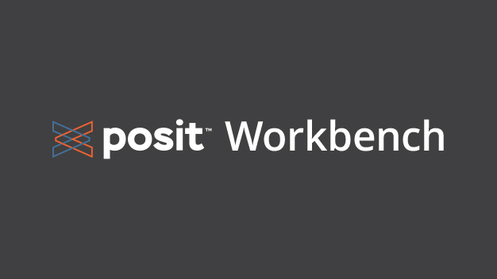

x <- c(1, 2, 3, 4)
mean(x)
hist(rnorm(100))
?rnormRefresher of the Tools course material
In this session, we will review the basics of R and generating descriptive statistics in R, which were introduced in the Tools course. Then we will learn about data visualization, including creating scatterplots, bar charts, histograms, line charts, and boxplots. We’ll discuss plot customization, faceting, and saving plots. Both univariate and bivariable plotting will be covered.
R basics
First, we’ll review the basics of R and R programming.
About R

- R is a free, open-source software environment for statistical computing and graphics
- Many of the functions you may wish to use will be contributed by other users as packages and available through repositories such as CRAN, GitHub, or Bioconductor, among others
- It is your responsibility to vet the quality and accuracy of any user-contributed packages
- The functions available with the initial installation of R, known as base R, can be considered trustworthy
Installing R
- Go to the website for The Comprehensive R Archive Network.
- The top of the web page provides three links for downloading R. Follow the link that describes your operating system: Windows, Mac, or Linux.
About RStudio

- RStudio is an Integrated Development Environment (IDE).
- It runs R and allows users to develop and edit programs and offers higher quality graphics and a more user-friendly interface.
- Note that RStudio is not a standalone program, you must have a separate installation of R
Installing RStudio
- Go to the website for RStudio
- Select “Download RStudio Desktop” under “Open Source Edition”
- Click the button for “Download RStudio”
- Scroll down and select the appropriate version for your operating system
- An installer will download and provide simple instructions to follow
Posit Workbench

- We will primarily use Posit Workbench on the servers, where the R version and many R packages are updated regularly
- See the wiki for details: http://jjnb-wiki-v-00.bio.ri.ccf.org/index.php/Running_R
- Login in using your Linux credentials at one of the links, for example lri-r07: https://lri-r07.lerner.ccf.org/auth-sign-in
Using RStudio
When you first open RStudio you will see a number of panes:

The layout of the panes can be customized by going to Tools > Global Options > Pane Layout.
Panes:
Text editor - this is where you will type your code, and you will save this file to a project folder for reproducibility
Console - this is where the code will be executed
Other panes will contain a variety of tabs. Some to note include:
- Environment: where you can see objects and data files that are available in your current session
- Files: here you should be able to access all folders and files on your home drive
- Plots: this is where plots will disply
- Help: this is where you will get help files for R functions
- Viewer: this is where you would preview any html output like a gt table or Quarto document
Using the text editor in RStudio
Always use a text editor to type code so that it can be saved for reproducibility purposes.
How to open a text editor window:
- To open a new text editor window go to: File > New File > R script
- To save the file go to: File > Save
Interactive RStudio demo
Navigate to https://lri-r07.lerner.ccf.org/auth-sign-in, log in, and run some example code.
Demonstrate how to:
- Create a new R script
- Add some code to it
- Run the code
- View help files
- Save the R script
Sending code to the console
To send this to the console to be executed, you can do one of the following:
- Place your cursor next to the line you want to run and hit Ctrl+Enter on your keyboard
- Place your cursor next to the line you want to run and hit the “Run” button
- Highlight all three lines of code and use one of the previous options
Getting help
Get help by typing ?fnname where fnname is the name of the function of interest.
- e.g. to see the help file for the mean function, type
?meanin the console ??fnnamecan be used if you aren’t sure of the exact function name - it will return any keyword matches
View the output
After we have run all three lines of code, we see the results of our mean computation in the Console pane.
And we see the resulting histogram in the Plots pane.
Interactive RStudio demo results

Installing R packages
CRAN is the primary repository for user-contributed R packages.
Packages that are on CRAN can be installed using the install.packages() function.
For example, we can install the {survival} package from CRAN using:
install.packages("survival")GitHub is a common repository for packages that are in development.
To install packages from GitHub, first install the {remotes} package from CRAN:
install.packages("remotes")Then, install the GitHub package of interest using install_github("username/repository"). For example, to install the emo repository from the GitHub username hadley, use:
library(remotes)
install_github("hadley/emo")Or, avoid a call to the library() function by using the syntax library::function():
remotes::install_github("hadley/emo")Bioconductor is a repository for open source code related to biological data. To install packages from Bioconductor, first install the {BiocManager} package from CRAN:
install.packages("BiocManager")Then install, for example, the {GenomicFeatures} package using the install function:
BiocManager::install("GenomicFeatures")Installation is the first step. Only needs to be done once.
Loading is the next step. Must be done every time you open a new R session in which you need to use the package.
There are two methods for loading R packages:
- A call to
library()loads the package for your entire R session.
library(survival)
survfit(formula, ...)- Using
::accesses the package only for a single function.
survival::survfit(formula, ...)Dataset for use in this class
The primary dataset used throughout this course is stored in this folder. We need to download it from GitHub onto our personal computers.
Navigate to the above location and left click on breastcancer.xlsx.
For a .xlsx file like this, you won’t see a preview of the data. Now right click on “Raw” and then select “Save link as…”

- Navigate to the “mmedr” folder we created earlier on your home directory, and save the file there as “breastcancer.xlsx”.
Loading data
The most common data format we work with are data from Excel.
Data should be:
- One dataset per file
- A single row of column headers across the top
- Simple column names are better - they will get transformed into variable names by R
- Typically one row per patient/sample is ideal
We will look at options to:
- Read in Excel files with {readxl}
- Read in Excel files by converting to .csv first
- Read in other file formats
First, install the {readxl} package from CRAN, then load the newly installed package:
install.packages("readxl")
library(readxl)Then use the read_excel() function with the appropriate filepath to read in the data and create an object called “mydf”:
mydf <- read_excel("~/folder/filename.xlsx")Note that R treats the \ as a special character so you either need to use / or \(\backslash \backslash\) in file paths.
Also note that on the Linux server (i.e. on Rstudio Pro via Posit Workbench), the path starts at /home/username, so filepaths relative to your directory can start “~/” followed by the folder where the file is located.
Alternatively, we can convert the file from .xlsx format to .csv format first, and then read it in.
Advantages: removes some of the possible formatting pitfalls associated with Excel files, and you don’t need any special packages to read this format.
- Open the Excel file.
- Go to File > Save As and select “CSV (Comma delimited)” from the “Save as type” drop down and save the file to the same location as “trial-csv.csv”
- Use the
read.csv()function with the appropriate file path to read in the data and create an object called “mycsv”
mycsv <- read.csv("~/folder/filename.csv") Note that this is the approach I always use myself and will form the basis of all of my examples
Many other file formats exist, and here is a non-comprehensive list of functions for loading some of them:
read.table()is the most generic function and can read many file typesread.csv()is a special case with fixed defaults for comma-separated filesread.csv2()is a special case with fixed defaults for comma-separated files that were created in a country where commas are used in place of decimal placesread.delim()is a special case with fixed defaults for tab-delimited filesread.delim2()is a special case with fixed defaults for tab-delimited files that were created in a country where commas are used in place of decimal places
Recall that we can clean up the names of the variables in our dataset using the clean_names() function from the {janitor} package:
mycsv <-
mycsv |>
janitor::clean_names()Basic programming
Use the assignment operator <- to assign values to objects
<-assigns values on the right, to objects on the left- Keyboard shortcut “Alt” + “-” will insert the assignment operator
x <- 55
x[1] 55Functions are pre-packaged scripts that automate more complicated procedures. They are executed by typing the name of the function followed by round brackets. Inside the round brackets we can provide one or more parameters, or arguments:
x <- 144
sqrt(x)[1] 12y <- 123.225
round(y)[1] 123round(y, digits = 1)[1] 123.2Use c() to create a vector of values or seq() to create a sequence of values:
a <- c(1, 2, 3, 4)
b <- seq(from = 0, to = 100, by = 10)
b <- seq(0, 100, 10)
b <- seq(by = 10, to = 100, from = 0)Note: when we supply the arguments to a function in the order in which they are listed in the documentation, we do not need to name them. If we name them, we can supply them in any order. The above three assignments to b yield the same results.
Here are all of the possible arguments to the seq() function:
seq(from = 1, to = 1, by = ((to - from)/(length.out - 1)),
length.out = NULL, along.with = NULL, ...)R is case sensitive:
- i.e.
ageis not the same asAge. - Variable names with spaces are problematic:
- Depending on how you read your data in, R may or may not automatically reformat variable names
- If you end up with a variable called, e.g. “Patient Age” you would need to reference it in backticks:
`Patient Age` - One option is to use the
clean_names()function from the {janitor} package to convert all variable names to snake case (or alternatives):
install.packages("janitor")
janitor::clean_names(df)The == operator tests equality between two values:
5 == 5[1] TRUE5 == 9[1] FALSEThe first returns TRUE because 5 does in fact equal 5.
The second returns FALSE because 5 is not equal to 9.
We’ll need this later when we subset data.
R has three main indexing operators:
- Dollar sign:
$ - Double brackets:
[[ ]] - Single brackets:
[ ]
To access specific variables, use the $ operator in the form dataframe$varname, where dataframe is the name of the object to which we assigned our data set, and varname is the name of the variable of interest
For example, to calculate the mean of the variable age_dx_years in the dataframe mycsv:
mean(mycsv$age_dx_yrs, na.rm = TRUE)[1] 57.2952Note that we need to add the argument na.rm = TRUE to remove missing values from the calculation of the mean, otherwise NA will be returned if missing values are present
Alternatively, use double brackets in the form dataframe[["varname"]]
mean(mycsv[["age_dx_yrs"]], na.rm = TRUE)[1] 57.2952Sometimes we may want to create a subset of our data, or access a value based on more than one dimension.
Datasets typically have two dimensions: columns and rows
For dataframe df, let i index the row and j index the column.
Then we can access any single cell in the dataframe using the syntax:
df[i, j]We can use this concept to create subsets of our data as well.
We can create a subset of our data based on the values in a row, for example limiting to patients who were treated with optimal systemic therapy:
df_sub <- mycsv[mycsv$optimal_systemic_therapy == 1, ]
nrow(df_sub)[1] 2660We see that the new data subset has 2660 rows.
The & operator signifies “and”.
So for example we could subset based on patients who were treated with optimal systemic therapy AND are over 45 years old:
df_sub <- mycsv[mycsv$optimal_systemic_therapy == 1 & mycsv$age_dx_yrs > 45, ]
nrow(df_sub)[1] 2166And we see that the new data subset has 2166 rows.
The | operator signifies “or”.
So for example we could subset based on patients who were treated with optimal systemic therapy OR are over 45 years old:
df_sub <- mycsv[mycsv$optimal_systemic_therapy == 1 | mycsv$age_dx_yrs > 45, ]
nrow(df_sub)[1] 2944And we see that our new datasubset has 2944 rows.
We can also create a subset of our data based on columns, for example limiting to optimal_systemic_therapy:
df_sub <- mycsv[ , c("optimal_systemic_therapy")]Or we can simultaneously subset based on rows and columns, for example limiting to the optimal_systemic_therapy column among patients with age greater than 45:
df_sub <- mycsv[mycsv$age_dx_yrs > 45, c("optimal_systemic_therapy")]We can also subset directly within functions. Suppose we want to calculate the mean of the variable age_dx_yrs in the dataframe mycsv, but only among those who were treated with optimal systemic therapy:
mean(mycsv$age_dx_yrs[mycsv$optimal_systemic_therapy == 1], na.rm = TRUE)[1] 57.31611This avoids creating additional datasets that may not be needed again.